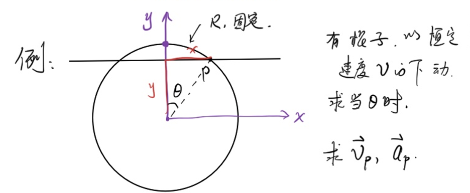
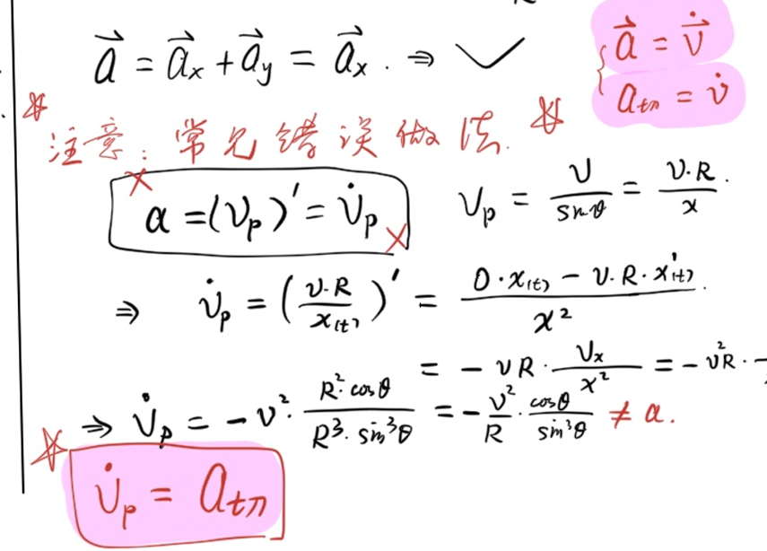
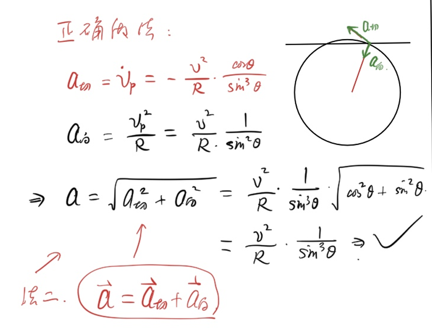

本文中涉及到的微积分服务于物理竞赛,侧重于实用性,而非严谨性
数列极限
引入
设\(a_n=1-10^{-n}(n=1,2,3,...)\)
可以知道,\(a_n\)越来越接近于1,但是当\(n\)无穷大时,\(a_n\)到底是不是1呢?
由此,我们由误差的角度,引入\(\epsilon-\N\)语言:
ϵ−N语言
如果存在一个\(p\in \R\)使得:对于任意的实数\(\epsilon\gt0\),都存在一个整数\(\N\),使得对于任意\(n\gt N\),\(|a_n-p|\lt\epsilon\),那么称\(p\)为数列\(a_n\)的极限,记作\(\lim_{n\to \infty}a_n=p\).否则叫做数列\(a_n\)没有极限
函数极限
引入
有了级数(数列)的极限,自然引出函数的极限.
当\(x\to 0\)时,\(f(x)=\frac{\sin x}{x}\)的值等于多少?
同理,引出\(\epsilon-\delta\)语言
ϵ−δ语言
如果存在一个\(p\in \R\)使得:对任意\(\epsilon\gt0\),若存在\(\delta\gt0\),使得当\(0\lt x_0-x\lt \delta\)时,\(|f(x)-p|\lt\epsilon\),则称\(f(x)\)在\(x_0\)处的左极限为\(p\),记作\(\lim_{x \to x_0^-} f(x)=p\)
同理容易得到右极限的定义.
此外,如果\(\lim_{x \to x_0^-} f(x)=\lim_{x \to x_0^+} f(x)\),则称\(f(x)\)在\(x_0\)处的极限为\(p\),记作\(\lim_{x \to x_0} f(x)=p\)
以上的 ϵ−N语言/ϵ−δ语言 不是本节的重点
好用的极限判断法则
夹逼定理
若\(f(x)\le g(x)\le h(x)\),且\(f(x),h(x)\)极限存在且相同,则\(f(x),h(x),g(x)\)极限存在且相同.
例1
(不严谨地)感受\(\lim_{x\to 0}\frac{\sin x}{x}=1\)
由单位圆中面积大小关系,熟知\(\sin x\le x\le\tan x,x\in [0,\frac{\pi}{2})\)
于是,有不等式\(\cos x=\frac{\sin x}{\tan x}\lt \frac{\sin x}{x}\lt 1,x\in (0,\frac{\pi}{2})\)
因为\(\cos x,1\)在0处的极限都是1,所以:
\(\boxed{\lim_{x\to 0}\frac{\sin x}{x}=1}\)
极限运算法则
容易证明,四则运算的极限等于极限的四则运算:
- \(\lim_{x\to x_0}(f(x)\pm g(x))=p_1\pm p_2\) - \(\lim_{x\to x_0}(f(x)g(x))=p_1p_2\)
- \(\lim_{x\to x_0}\frac{f(x)}{g(x)}=\frac{p_1}{p_2}\)
- 若\(\lim_{x\to x_0}f(x)=p_1,\lim_{x\to x_0}f(x)=p_2\),则:
- 若\(\lim_{x\to x_0}f(x)=p_1,\lim_{x\to x_0}f(x)=p_2\ne 0\),则:
例2
计算极限(不一定存在极限)
\[\lim_{x \to 5} \frac{1}{x-5}\] \(x-5\to 0\),不存在极限 \[\lim_{x \to 0} \frac{x^2}{\sin x}\] \(\lim_{x \to 0} \frac{x^2}{\sin x}=\frac{\lim_{x\to 0}x}{\lim_{x\to 0}\frac{\sin x}{x}}=\frac{0}{1}=0\) \[\lim_{x \to \infty} \frac{\sin x}{x}\] 由夹逼定理:
\(\frac{-1}{|x|}\le \frac{\sin x}{x}\le \frac{1}{|x|}\)
左右极限等于0,所以所求极限为0. \[\lim_{x \to \infty} \frac{10x^2 + 203x}{3x^2 + 5x + 7}\] \(\lim_{x \to \infty} \frac{10x^2 + 203x}{3x^2 + 5x + 7}=\lim_{x \to \infty} \frac{10 + 203\frac{1}{x}}{3 + 5\frac{1}{x} + 7\frac{1}{x^2}}=\frac{\lim_{x \to \infty}(10 + 203\frac{1}{x})}{\lim_{x \to \infty}(3 + 5\frac{1}{x} + 7\frac{1}{x^2})}=\frac{10}{3}1\) \[\lim_{x\to 0}\frac{1-\cos x}{x^2}\] \(\lim_{x\to 0}\frac{1-\cos x}{x^2}=\lim_{x\to 0}\frac{2\sin^2 \frac{x}{2}}{x^2}=\frac{1}{2}\lim_{x\to 0}(\frac{\sin \frac{x}{2}}{\frac{x}{2}})(\frac{\sin \frac{x}{2}}{\frac{x}{2}})=\frac{1}{2}(\lim_{x\to 0}(\frac{\sin \frac{x}{2}}{\frac{x}{2}}))^2=\frac{1}{2}\times1^2=\frac{1}{2}\)
导数
引入
考虑函数 \(f(x)=x^2\)，在 \(x=1\) 处，函数的瞬时变化率是多少？
我们先考虑从 \(x=1\) 到 \(x=1+\Delta x\) 的平均变化率：
\[\frac{f(1+\Delta x)-f(1)}{\Delta x}=\frac{(1+\Delta x)^2-1}{\Delta x}=2+\Delta x\]
当 \(\Delta x\to 0\) 时，平均变化率趋近于 \(2\)，这就是 \(f(x)=x^2\) 在 \(x=1\) 处的瞬时变化率，即导数.
导数↔微商
微分,即微小变化量.微分之商,称为微商.
定义\(f'(x)=\lim_{\Delta x\to0}\frac{\Delta f}{\Delta x}=\frac{df}{dx}\)
导数的定义
若极限
\[\lim_{\Delta x\to 0}\frac{f(x_0+\Delta x)-f(x_0)}{\Delta x}\]
存在，则称 \(f(x)\) 在 \(x_0\) 处可导，该极限值称为 \(f(x)\) 在 \(x_0\) 处的导数，记作 \(f'(x_0)\) 或 \(\left.\dfrac{\mathrm{d}f}{\mathrm{d}x}\right|_{x=x_0}\).
若 \(f(x)\) 在定义域上每一点都可导，则称 \(f'(x)\) 为 \(f(x)\) 的导函数，简称导数.
以上严格定义不是本节重点，重要的是会计算导数.
常见函数的导数
由定义出发，可以推导出以下常用结论：
| 函数 \(f(x)\) | 导数 \(f'(x)\) | |:-----------:|:------------:| | \(C\)（常数） | \(0\) | | \(x^n\) | \(nx^{n-1}\) | | \(\sin x\) | \(\cos x\) | | \(\cos x\) | \(-\sin x\) | | \(e^x\) | \(e^x\) | | \(\ln x\) | \(\dfrac{1}{x}\) |
例：由定义推导 \((x^2)'=2x\)
\[\lim_{\Delta x\to 0}\frac{(x+\Delta x)^2-x^2}{\Delta x}=\lim_{\Delta x\to 0}\frac{2x\Delta x+(\Delta x)^2}{\Delta x}=\lim_{\Delta x\to 0}(2x+\Delta x)=2x\]
导数的四则运算法则
法则
设 \(f(x),g(x)\) 均可导，则：
- 加减法则：\((f(x)\pm g(x))'=f'(x)\pm g'(x)\)
- 乘法法则：\((f(x)g(x))'=f'(x)g(x)+f(x)g'(x)\)
- 除法法则：\(\left(\dfrac{f(x)}{g(x)}\right)'=\dfrac{f'(x)g(x)-f(x)g'(x)}{[g(x)]^2}\)，其中 \(g(x)\ne 0\)
记忆口诀：乘法法则——"前导后不导，加上前不导后导"；除法法则——"上导下减上下导，除以下的平方".
推导乘法法则
\[[f(x)g(x)]'=\lim_{\Delta x\to 0}\frac{f(x+\Delta x)g(x+\Delta x)-f(x)g(x)}{\Delta x}\]
加减同一项 \(f(x)g(x+\Delta x)\)：
\[=\lim_{\Delta x\to 0}\frac{f(x+\Delta x)-f(x)}{\Delta x}\cdot g(x+\Delta x)+f(x)\cdot\frac{g(x+\Delta x)-g(x)}{\Delta x}\]
\[=f'(x)g(x)+f(x)g'(x)\]
例题
例1
求 \(f(x)=x^3\sin x\) 的导数.
由乘法法则：
\[f'(x)=(x^3)'\sin x+x^3(\sin x)'=3x^2\sin x+x^3\cos x\]
例2
求 \(f(x)=\dfrac{\sin x}{x}\) 的导数（\(x\ne 0\)）.
由除法法则：
\[f'(x)=\frac{(\sin x)'\cdot x-\sin x\cdot(x)'}{x^2}=\frac{x\cos x-\sin x}{x^2}\]
例3
求 \(f(x)=e^x(\sin x+\cos x)\) 的导数.
由乘法法则：
\[f'(x)=(e^x)'(\sin x+\cos x)+e^x(\sin x+\cos x)'\]
\[=e^x(\sin x+\cos x)+e^x(\cos x-\sin x)\]
\[=2e^x\cos x\]
例4
求 \(f(x)=\tan x\) 的导数.
将 \(\tan x=\dfrac{\sin x}{\cos x}\)，由除法法则：
\[(\tan x)'=\frac{(\sin x)'\cos x-\sin x(\cos x)'}{\cos^2 x}=\frac{\cos^2 x+\sin^2 x}{\cos^2 x}=\frac{1}{\cos^2 x}=\sec^2 x\]
\[\boxed{(\tan x)'=\sec^2 x}\]
导数的物理应用
\(\vec{v}=\lim_{\Delta t\to 0}\frac{\vec{x}}{\vec{t}}=\frac{d\vec{r}}{dt}=\dot{\vec{r}}\)
\(\vec{a}=\lim_{\Delta t\to 0}\frac{\vec{v}}{\vec{t}}=\frac{d\vec{v}}{dt}=\dot{\vec{v}}=\ddot{\vec{r}}\)
点号为牛顿记号,表示对时间求导.
例1
运用导数,求角速度为\(w\)的匀速圆周运动的速度与加速度的大小.
\(\begin{cases} x=R\cos wt,\\ y=R\sin wt \end{cases}\)
\(\begin{cases} v_x=-Rw\sin wt,\\ v_y=Rw\cos wt \end{cases}\)
于是\(v=\sqrt{v_x^2+v_y^2}=Rw\)
\(\begin{cases} a_x=-Rw^2\cos wt,\\ a_y=-Rw^2\sin wt \end{cases}\)
于是\(a=\sqrt{a_x^2+a_y^2}=Rw^2\)
例2

对于这个问题,可以有两种处理方法:- 在直角坐标系中分解
- 在极坐标系中分解
法一
不妨从圆的最上端开始计时:
\(\begin{cases} y=R-vt,\\ x=\sqrt{R^2-y^2}=\sqrt{R^2-(R-vt)^2} \end{cases}\)
\(\begin{cases} v_y=\dot{y}=-v,\\ v_x=\dot{x}\\=\frac{1}{2}(R^2-(R-vt)^2)^\frac{-1}{2}[R^2-(R-vt)^2]'\\=\frac{1}{2}(R^2-(R-vt)^2)^\frac{-1}{2}(-1)(-v)'2(R-vt)\\ =(R^2-(R-vt)^2)^\frac{-1}{2}(R-vt)v\\ =\frac{vy}{x}=\frac{v}{\tan \theta} \end{cases}\)
所以\(v=\sqrt{v_x^2+v_y^2}=\frac{v}{\sin \theta}\)(由速度分解易得)
\(\begin{cases} a_y=0,\\ a_x=(v\frac{y(t)}{x(t)})'=v\frac{y'x-yx'}{x^2}=v\frac{xv_y-yv_x}{x^2}=-v^2\frac{x^2+y^2}{x^3}=-v^2\frac{1}{R\sin^3\theta} \end{cases}\)
这里需要注意一个常见错误:

修正之后,就得到了:
法二

AI总结(Sonnet 4.6)
微积分基础导论（物理竞赛向，侧重实用）分三大板块：
极限：从数列极限（ε-N）到函数极限（ε-δ），掌握夹逼定理与四则运算法则，会算常见极限即可。
导数：理解"瞬时变化率即极限"的本质，熟记常见函数导数表，掌握加减、乘法、除法三大运算法则。
物理应用：速度 \(v=\dot{r}\)，加速度 \(a=\ddot{r}\)，用参数方程 + 求导处理圆周运动等几何问题。